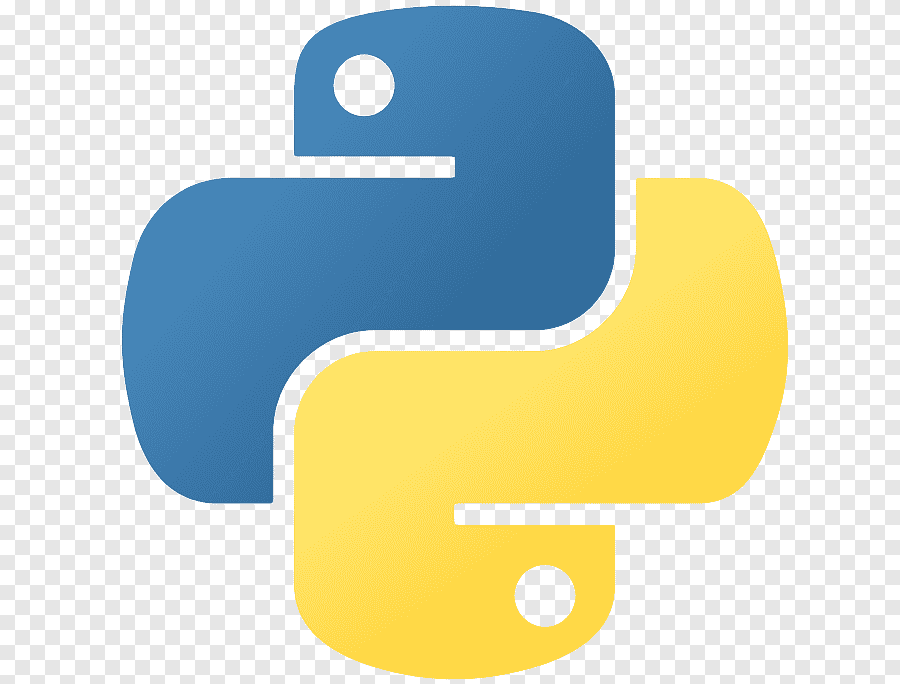

| Nombre |
Descripción |
 |
PHP es un acrónimo de Hypertext Preprocessor, es un lenguaje de scripting del lado del servidor y es uno de los lenguajes de programación más utilizados para el desarrollo web backend. |
|  |
Python Es un lenguaje de programación de alto nivel y propósito general que admite múltiples paradigmas de programación, como Orientado a Objetos, Procesal y Funcional. |
 |
JavaScrip es una de las unidades fundamentales del desarrollo web junto con HTML y CSS. El lenguaje está siendo preferido por una gran cantidad de desarrolladores para el desarrollo web, y también se encuentra en la primera posición en varios índices de renombre para los principales lenguajes de programación.. |
 |
Django es un marco web de código abierto basado en Python que le permite realizar el desarrollo web de manera más eficiente y sin problemas. Django sigue el patrón arquitectónico modelo-plantilla-vistas (MTV). |
 |
Ruby es también conocido como Rails, es un marco de trabajo de aplicación web del lado del servidor basado en Ruby con una licencia MIT. Rails es un marco de trabajo MVC que ofrece estructuras, páginas web y servicios web predeterminados de bases de datos. |